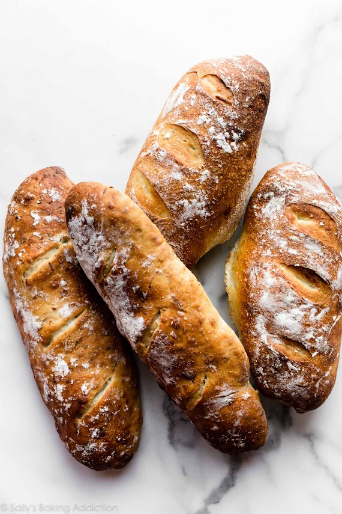

Domaći kruh jedan je od najjednostavnijih recepata koji možemo pripremiti kod kuće. Potrebno je samo nekoliko sastojaka, malo vremena i strpljenja.
Količina vode može se malo prilagoditi ovisno o vrsti brašna. Omjer vode i
brašna može se zapisati kao voda / brašno
Za ovaj recept koristimo približno 60% vode u odnosu na količinu brašna.

Temperatura pečenja može biti oko 220°C. Vrijeme pečenja ovisi o veličini kruha.
Tijesto treba biti mekano i lagano ljepljivo. Ako je tijesto pretvrdo, potrebno je dodati malo vode. Ako je je previše ljepljivo može se dodati mala količina brašna.
“Dobar kruh traži samo nekoliko sastojaka, ali najviše
strpljenja."
Stara kuhinjska izreka
Ako želite naučiti više o pečenju kruha, posjetite stranicu o kruhu..
Brašno
Osnovni sastojak od kojeg se priprema tijesto.
Kvasac
Mikroorganizam koji omogućuje dizanje tijestu.
Gluten
Bjelančevina koja tijestu daje elastičnost i strukturu.
Fermentacija
Proces tijekom kojeg kvasac proizvodi plinove koji uzrokuju dizanje
tijesta.
Kemijska formula vode je H2O